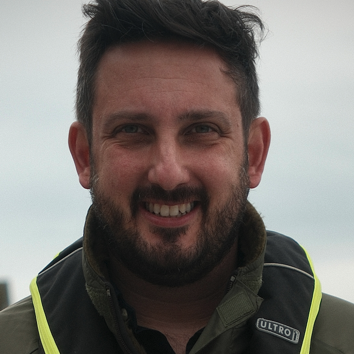

This session explores how academics can translate research partnerships into meaningful learning experiences. Using the SPARC Framework, delegates will see how field research with partners in defence, sport, business, sustainability, and exploration can be transformed into scenario-based teaching that students actively experience.
Research often reaches students as a lecture example, reading list item, or case study. Those approaches have value, but they rarely allow students to experience the uncertainty, judgement, collaboration, and trade-offs that sit inside real-world practice. SPARC helps educators move from telling students about research to designing learning experiences where students apply ideas, make decisions, and reflect on consequences.
A practical design route for turning research partnerships into applied learning experiences.

Dr Jonathan Rhodes is a Lecturer in Performance Psychology at the University of Plymouth. His work focuses on motivation, imagery, performance psychology, and the translation of applied research into education, coaching, and real-world practice. He works across contexts including sport, defence, exploration, business, sustainability, and health behaviour. Dr Rhodes is also the co-author of The Choice Point, a book exploring how psychological tools can support decision-making and performance under pressure.
The Plymouth Exploration and Discovery Research Unit (PEDRU) brings together research, education, and applied practice linked to exploration, extreme environments, human performance, leadership, and decision-making under uncertainty. Its work connects academic insight with partners working in challenging environments, helping to understand how people prepare, adapt, lead, and perform when conditions are demanding.
The SPARC Framework is designed to make impact visible in the curriculum. Rather than treating external partnerships as separate from teaching, SPARC helps academics turn research relationships into learning experiences. Students do not simply hear about applied work; they enter scenarios, make decisions, reflect on consequences, and connect theory with practice.
That question is the engine of SPARC.